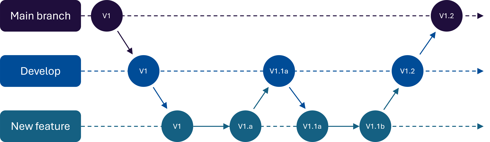

Week 4: Repositories and Version Control#
Studio Abstract#
In this studio, we will discuss repositories and why they are important; and you will set up a repository for your team and use it for the first time. We will also discuss interviewing – something that you have already started.
We will address the following activities and exercises in this studio:
Overview of repositories
Setting up and using a team repository on GitHub
Using Markdown for documentation
Repositories in software projects#
⏱️ 15 minutes - Class discussion
Devices closed for this discussion
Source code repositories (which can be used for much more than source code!) using tools such as Git and Mercurial are commonplace in software projects. They allow teams to create, store, manage and share their code and other documentation, but they are much more than tools like Google Drive, OneDrive, or DropBox – they help to resolve conflicts in editing, and to create sub-projects so that you can work on part of a product without affecting the rest.
Git, originally created by Linus Torvalds, creator of Linux, is the most commonly-used repository tool. It is a distributed version control system to track versions of files.
GitHub is a company that provides a browser or desktop based user interface for Git. There are many ways to use Git, and there are other companies that provide Git services, but GitHub is one of the more popular services. In this course, we will use Github for our projects, because it is a well-known tool, and because the course staff can set up a shared space for all projects in the course.
Why use repositories?#
Surely, we can just share source code via email or a messaging app by zipping it up, or just share it on Google Docs, OneDrive, DropBox, etc!
Well… we can do that, but it is a Very Bad Idea (VBI)!
Consider Imogen and Zac working collaboratively on a software project using a shared drive, such as Google Drive. One day, Imogen downloads a file to work on. A bit later, Zac does too. Imogen makes some changes and then copies the file back to the server. Her changes are all there! A bit later, Zac uploads his copy of the file. His changes are all there! After lunch, Imogen needs to make some further changes, so she gets the file again, knowing that Zac had worked on it. What would she find??
After Imogen recovers from her extreme disappointment, she will have to work with Zac despite the fact she will resent him! They will have to merge the changes and update them.
How can we solve this? One option is to only allow one person to work on one file at a time. This is okay, but it can cause blocks; sometimes people want to make minor changes to the same files. What if Zac is working on something for a week and Imogen just needs to correct a small bug?
Source code repositories help us with all this with several pieces of functionality:
Pulls: Multiple people can work on the same file at the same time. They first pull any other changes made from the repository since they last used it.
Pushes: When Imogen pushes her changes to the shared repository, three things can happen:
Nobody else has made changes since Imogen downloaded the latest version, so everything is good.
If Zac or someone else has made changes to the same file but at different lines, a repository tool like Git will simply merge the two files automatically.
If Zac or someone else has made changes to the same file and some are at the lines, a repository tool like Git will prevent Imogen copying the file back, will merge any lines that do not conflict, and will show her lines that do conflict. She then needs to resolve those conflicts. As a quick note, Git has both commits and pushes. Each user maintains a local copy of a repository on their machine. They commit code to the local repository, and then when they are happy, they push it to the server.
Branches and merges: If Imogen wants to make some changes to the source code that will take a few weeks, she may want to keep pushing her changes to the repository to avoid losing her work. However, she may not want everyone else to use those changes yet; for example, they aren’t complete or she hasn’t tested them, this would interfere with others’ code. In this case, she can create a branch of the repository, where she can continue to push changes just to that branch, which doesn’t affect everyone else. Once she is happy, she can merge her branch into the main branch of the repository. If there are conflicts, she will not be able to merge until she resolved them.
Branches#
As an example of using branches, consider Imogen working for an organisation that has a successful web application. They want to add new features, fix bugs, etc., regularly. They release new versions every few days on average to fix bugs. Imagine, they want to go from version V1 to version V1.1 by adding two features, which we’ll call features A and B. Imogen estimates it will take about 4 weeks to implement these.
They may have (at least) three branches:
Main branch: This is the primary branch where the stable, production-ready code resides. Changes here are thoroughly tested and reviewed. It would be a VBI (very bad idea) for Imogen to start coding those new features directly on the main branch; customers would see partially implemented features, probably with bugs.
Development branch: Used for integrating new features and bug fixes before they are merged into the main branch. This branch is less stable than the main branch but more stable than feature branches. However, it would be a bad idea (BI) for Imogen to start adding features directly to this, as other developers in the organisation are also making changes, and it will be difficult for her to test her features while other source code is changing as well.
Feature branches: These are created from the development branch for specific features or fixes. Developers work on these branches independently, allowing them to make changes without affecting the main or development branches. Imogen can create a feature branch from the development branch, that is implementing just her features.

Once Imogen has implemented and tested feature A, she merges this. There are three steps to a merge:
Merging feature branches: Once a feature is complete and tested, it is merged into the development branch. So, Imogen would integrate the changes from her feature branch into the development branch.
Conflict resolution: During merging, conflicts may arise if changes overlap. A tool like Git will highlight these conflicts, and developers must resolve them before completing the merge.
Final merge to main branch: After thorough testing and review, changes from the development branch are merged into the main branch. This ensures that only stable and tested code is deployed to production.
Each time these merges happen, conflicts will be detected, and non-conflicting code will be merged. Brilliant! This means that Imogen will actually want to continue working with Zac, rather than resenting him forever and leaving the organisation after six months because she needs a break.
Commit messages#
When someone commits changes to a local repository, they are asked to (and should!) use a commit message. A commit message is a brief description that explains what changes were made and why. This provides context and clarity for other developers to help team members why changes are made, who made them, to track progress, and to help rollback when changes introduce new problems.
A good commit message should:
Clearly describe what changes have been made. Messages like “Fixed a bug” or “Updated the code” are not good enough.
Start with a verb; e.g. “Added password encryption”
Be concise. Keep it to a few words per small change.
Reference any issues / tickets that it fixes.
Focus on a single thing; that is, avoid committing changes across many features of the software at once – just make one change or group of changes in each commit.
An example of a nice commit message:
Add user authentication feature
- Implemented login and registration forms
- Added password encryption
- Updated user model to include authentication fields
- Fixed related bugs in user session management
Summary#
Repositories have several important features:
Sharing of code
Pull
Commit
Push
Branches
Branch
Merge
Conflict detection and resolution
Commit messages
Your team repository#
Devices required for all exercises in this section
In this part of the studio, you will set up and start using your team repository.
We are not going to explicitly tell you all of the commands that you need. Instead, we want you to read the Git documentation to get a more complete understanding of how to use Git as a source code repository.
Set up account and accept course invite#
⏱️ 10 minutes - Individual
You will have received an invite to the Github organisation called COMP1100-[Year]-s1/2 or COMP710-[Year]-s1/2, where Year is this year, and s1 or s2 depending which semester you take the course in.
Accept this invite, creating an account on Github if you do not have one already.
Installing a Git client#
⏱️ 10 minutes - Individual
The first thing each team member needs to do is install the software for Git.
There are three main options for you to use, and the staff have no particular recommendation: the decision is up to your preference. However, if you are new to coding and have minimal experience using command-line tools, we recommend option 3 below. The three general options are:
If you use an existing integrated development environment (IDE), such as VSCode, you will be able to install a Git client within that (if you haven’t already). This means you can use Git from within your IDE. Find the documentation for how to install it within your IDE. If you don’t use an IDE, go to 2 or 3.
Use a Git command-line tool. This is for those who like to use Linux (either natively or via Windows SL) or the MacOS underlying Unix command line. If you want to do this, you can install it locally. One way to do this is to install the Github desktop client (see option 3), which will also install the command-line tool for you.
Use the GitHub Desktop Client. This is installed as a standard desktop client on your PC, and it allows you to interact with a Git server, including GitHub, which is what we will use. If you opt for this, download from here. There are othet desktop clients available, and you are also free to use those.
Setting up a GitHub repository for your team#
⏱️ 10 minutes - Group
One team member should create a repository for the team. This MUST be follow the following format:
[Day]_[Time]_Team_[XY]
where Day is either Mon, Tue or Wed, and time is either 11am or 2pm, and XY is your team number using two digits.
For example: Mon_11am_Team_02 — so the same format as your MS Teams channel name.
Follow this exact format, including capitalisation, to make the repositories consistent and easy to find for your legends.
When creating this, choose the following settings:
The repository is private.
A readme file is created.
For other settings, you can leave the default values (or choose other options if you like).
This team member should invite ALL team members AND your legend to the repository. From the top menu, select Settings, then from the left select Collaborators and teams, and under Manage access you can Add people.
Clone your repository#
⏱️ 10 minutes - Group
Each member of the group should clone their repository, which means to take an existing repository and create a copy on your local machine.
Use the following documentation to help you with this task:
Adding, committing, and pushing files and folders#
⏱️ 20 minutes - Group
Git repositories are known as distributed repositories. This means that each person has a copy of the repository (including its entire history, etc.) on their local computer, which they need to sync with a remote repository so others can see their changes.
The following tasks require you to understand how to add and commit files to your local repository and how to sync those with a remote repository; in our case, the remote repository on Github.
Use the following documentation to help you with this:
GitHub repositories, like any file storage, require a logical file structure. Complete the following tasks:
Find the team values that you agreed to in week 1 and type them up into a text file (NOT a Word document or similar; just a plain text file edited in something like Notepad or VSCode). Have you lost your team values? If yes, this is precisely why repositories are great idea! So just write up what you remember. You will convert this file to markup by renaming it to
team_values.md.One team member (who has a copy of the file) should copy this file into the folder where their repository is cloned to.
Next, as a group, work together to figure out how this team member should
addandcommitthis change to their local repository, and thenpushit to the Github remote repository. Don’t forget to add a good commit message!Now, each team member should pull from the remote Github repository.
In the file README.md in the top folder of the repository, add the following for each team member: Name, Github username, and UQ email address.
Commit and push this file to the repository.
Goal: The end result should be that each team member should be able to see the file team_values.md and open/edit it on their local computer.
If each member cannot see this, trace back to see what you have missed.
Deliverable: Show your legend that you have successfully completed this task before moving on to the next task.
Common mistakes:
You need to explicitly tell git when you want to add a file to your local repository. This allows us to have files in the folder where your repository is on your local computer without putting them in the repository itself.
Remember that when you make a change, you need to first commit it to your local repository and then push it to the remote repository on Github.
Understanding branch and merge#
⏱️ 20 minutes - Group
In this exercise, we will learn how to branch and merge. Use the following documentation to help you with this:
You will be using the transcripts from the interviews that you have done so far.
Complete the following task, which gets each member to create a branch, make changes, and merge it back into the main branch:
One team member should create a new folder called
Interviews, which is where you will store your interview data. Commit and push this to the remote repository.Next, each team member must now sync their local repository using
pullto pull down the new change.Each member should create a new branch using the
branchcommand in Git. In this branch, they are going to add the interview transcripts that you have done so far.Next, each team member must now create a new folder inside the
Interviewsfolder. This new folder should just be their name.Then, each team member should copy the interview transcripts they have done so far into the folder with their name, commit these locally, and then push to sync with the remote repository.
At this point, all changes are on the individual team member’s branch – NOT on the main branch. So, each team member should
mergetheir branch into the main branch.Now, each team member should switch to the main branch and pull all of the changes from the other team members.
Finally, each team member should delete the branch they have created as the changes are in the main branch, so the development branches are no longer required. HINT: you need to use the
branchcommand to delete a branch.
Goal: The end result of this task should be that all team members, on their local machine, have each others’ interview transcripts.
If each team member cannot see all of the other team members’ transcripts, trace back to see what you have missed.
Deliverable: Show your legend that you have successfully completed this task before moving on to the next task.
Common mistakes:
Make sure to pull the repository after your team member has pushed the change with the
Interviewsfolder.Make sure that you are are not pushing to the main branch after you add your files.
Take a break#
⏱️ 10 minutes
Managing merge conflicts#
⏱️ 20 minutes - Group
The challenge for this task is to create an artificial merge conflict. You can do these a variety of ways.
Use the following documentation to help with this task:
Using the team_values.md file, use your own creativity to come up with a merge conflict between two team members by changing: (a) the same line of the file; and (b) each a different line of the file. This can be just a spelling correction or a small change in wording – or add a whole new team value!
Goal: The end result should be an updated repository with the conflicting changes resolved.
Deliverable: Show your legend that you have successfully completed this task before moving on to the next task.
One quick point on terminology#
Git is a tool that allows us to create and use Git source code repositories.
Github is a web platform for hosting the repository database.
Git repositories can be hosted on other web platforms, such as an private platform in an organisation, or other public platforms, such as BitBucket.
More than source code: using Markdown#
We can use source code repository for more than source code – we can use it to document our project too!
However, so that we get the benefit of merging etc., we need to document stuff in plain text files. This could be .txt, HTML files, etc.,
In this course, we will use Markdown.
Markdown is an easy-to-use markup language that can be used to format plain text. It can be stored in repositories using tools like Github. It is readable in its raw format, but can be converted to better-looking formats such as PDF and HTML (these notes are written in Markdown!).
To write documents in markdown, you can just use any plain text editor, such as Notepad, VSCode, vi (if you are awesome), or even word processors – but make sure you save as plain text!
And best yet, Github and other repository hosting platforms format Markdown files for you when you read them online.
Use the following tutorials for this task:
In this task, you will format your team values using Markdown. Together, go back to your team_values.md on one team member’s machine and do the following:
Create a Markdown header called “Team values”
Put your list of values into an ordered list.
Format your values so that each value has a name, such as “Praise our legend” in bold, followed by a description of the value that is not in italics.
Commit, and push these changes to the remote repository on Github.
Go to the URL for your Github repository, which should be at [http://
], where you should be able to click on team_values.mdand see your values nicely formatted!
Goal: The end result should be your team values, formatted properly and looking professional.
Deliverable: Show your legend your beautifully-formatted team values.
Exit Ticket#
Your exit ticket for this week’s studio is to:
Show your legend that you have created a private repository named using the format:
[Day]_[Time]_Team_[XY].
Bonus: It’s dangerous to go alone! Take this.#
⏱️ ∞
Here is a collection of valuable knowledge and insight that may help you along in this course. Feel free to review this content in your own time.